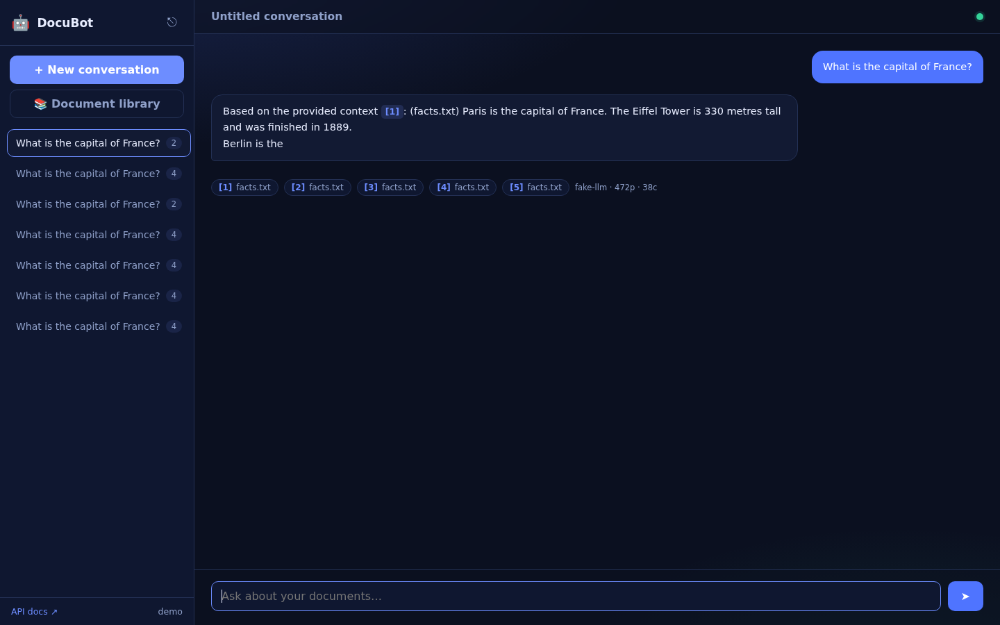
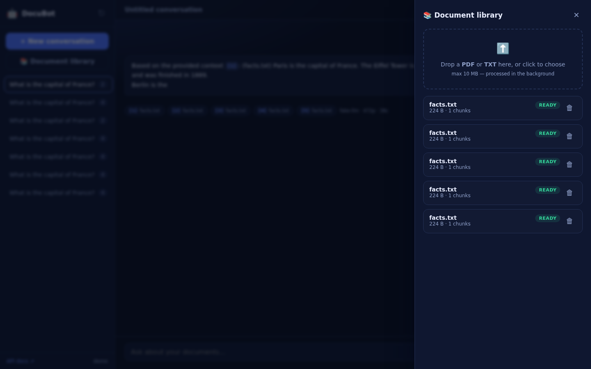
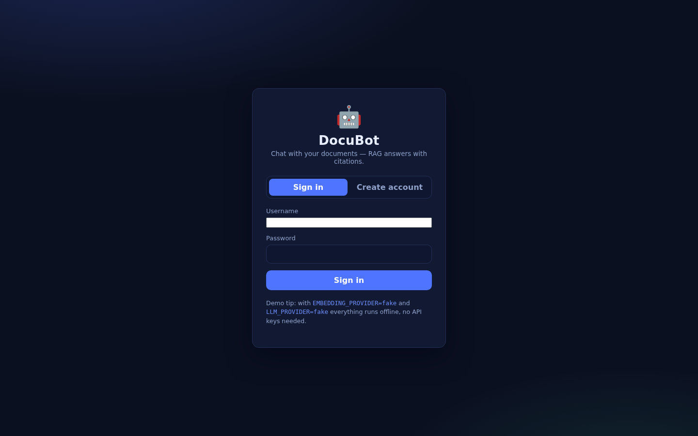

Ask your documents.
Get streamed answers with citations.
docubot is a production-grade RAG knowledge-base backend: Django 5.2 + pgvector + Celery — JWT auth, streaming (SSE) answers that always cite their sources, ingestion pipeline, rate limiting and health checks. Not a notebook demo — a service you can deploy.
What's inside
Every piece exists because a real deployment needs it — and each one is covered by tests.
Streaming answers with citations
Answers stream over Server-Sent Events token by token, and every claim carries a citation back to the document and chunk it came from.
pgvector semantic search
Documents are chunked and embedded into Postgres via pgvector — retrieval stays inside the database you already operate.
Celery ingestion pipeline
Uploads are parsed, chunked and embedded asynchronously by Celery workers, so large libraries never block a request.
JWT auth, rate limiting, health checks
JWT authentication on every route, per-client rate limits with a clean 429 story, and health endpoints ready for your load balancer.
330 tests · 95% coverage
A pytest suite that covers the API, retrieval quality, rate limiting and failure paths — wired into CI on every push.
Docker from day one
Web, worker, Postgres and Redis ship as a compose stack, with a production compose file for real deployments.
The product, in screenshots
The demo UI ships inside the repo (templates/demo.html) — these are real screens from it.



Run it locally in a minute
The compose stack brings up web, Celery worker, Postgres and Redis together.
# clone and start the whole stack (web, worker, Postgres, Redis)
git clone https://github.com/Abolfazlrwm/docubot && cd docubot
docker compose up -d --build
# demo UI → http://localhost:8000/demo/
# Swagger UI → http://localhost:8000/api/docs/
# health JSON → http://localhost:8000/api/v1/health/Full setup, environment variables and production notes live in the README.